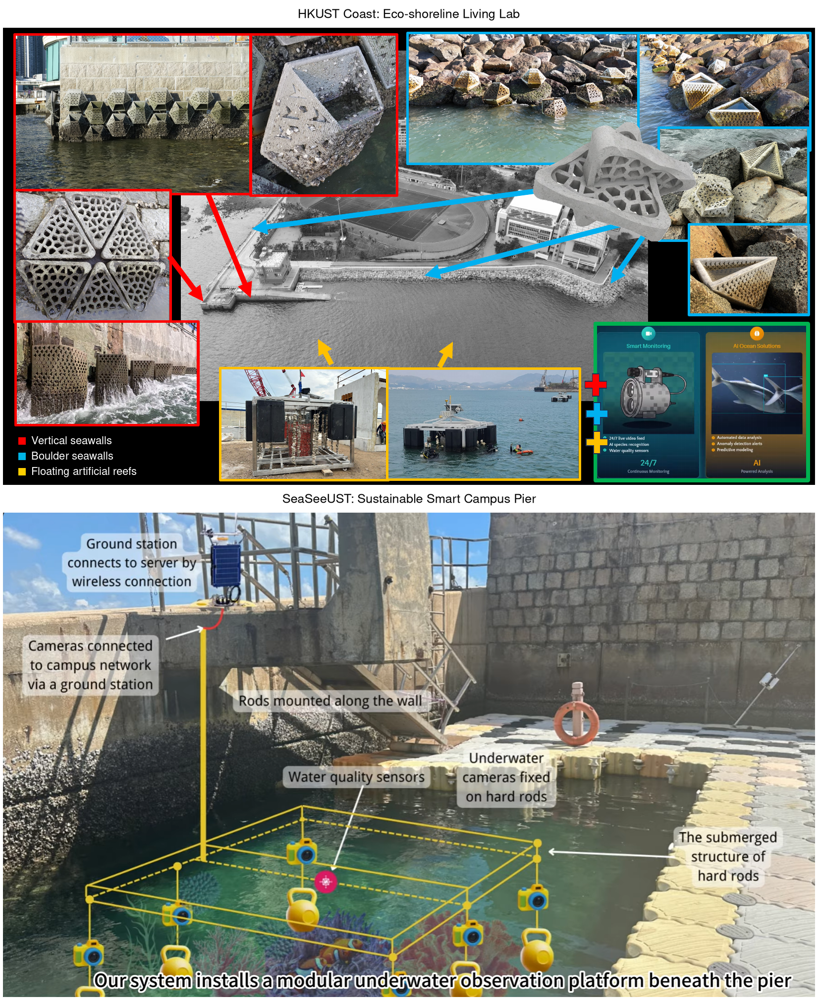

Jay Joan Minuti’s research
HKUST Coast: Eco-shoreline Living Lab
Led by Dr. Jay Joan Minuti, the HKUST Coast concept proposes a campus space for nature-based solutions, research and education. Eco-engineered features on vertical and boulder seawalls would create more varied habitats for marine life. Drawing on eco-shoreline trials and floating artificial reef work in Hong Kong, the initiative aims to test coastal interventions, monitor ecological responses and give students direct experience of conservation in practice.
Explore Dr. Minuti's research ↗